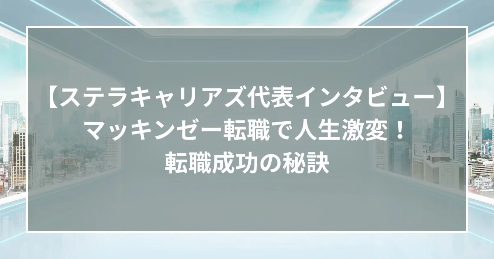
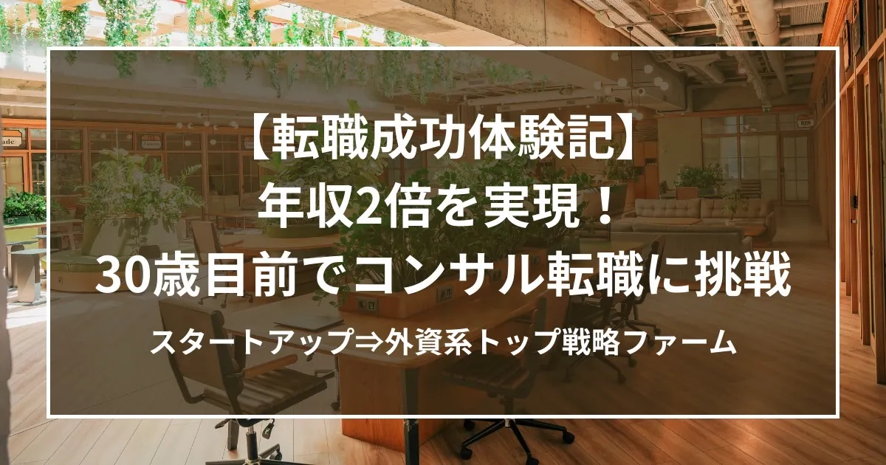
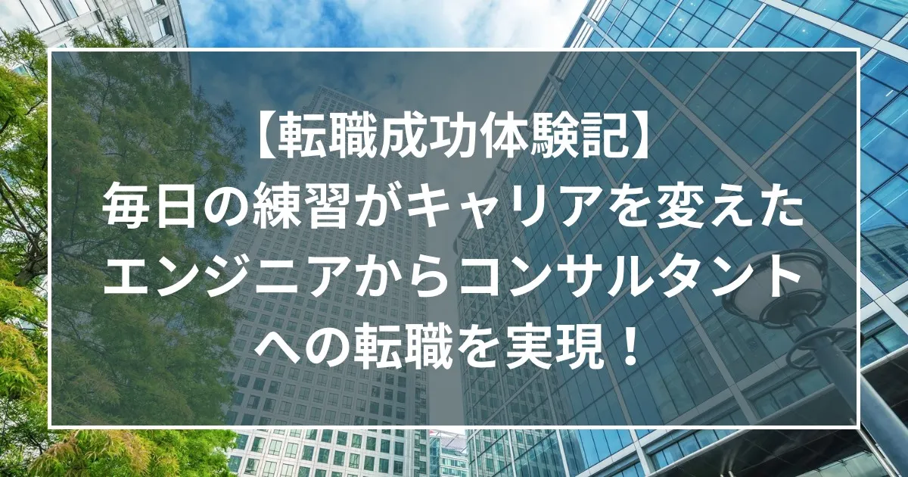
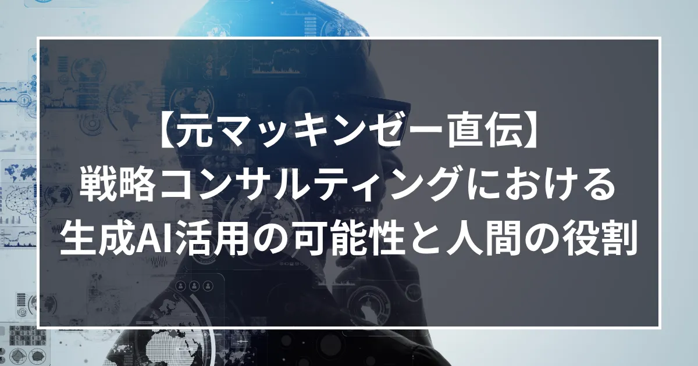

所属エージェント全員が
外資系コンサルファーム出身者
コンサル業界を知り尽くしたエージェントが
あなたのキャリアを動かす
所属エージェント
Stellar careers agents
-
村木 勇也
代表取締役社長
University of
South Florida
修士課程修了新卒で日系の事業会社入社。サービス開発、B2B営業、海外子会社の経営再建などを担当。
その後、マッキンゼー・アンド・カンパニーに中途入社。エンゲージメントマネージャーとしてプロジェクトをリードする傍ら、コンサルタントの採用面接も担当
2024年、ステラキャリアズ株式会社立ち上げ。同グループのステラインキュベーションのシニアアドバイザーとして、戦略コンサルティング業務にも引き続き従事 -

春名 航希
キャリアエージェント
東京大学文学部修了
新卒でAIエンジニアとしてベンチャー企業入社
第二新卒でボストン・コンサルティング・グループ入社
IT・メディア・通信業界を中心に戦略策定や新規事業企画などのプロジェクトに従事
2025年、ステラキャリアズ株式会社参画 -
大歳 さゆり
キャリアエージェント
一橋大学大学院
経営管理研究科修了国内大手システムインテグレーターにて約7年間、事業企画・営業を経験
その後、ローランド・ベルガーにキャリア入社。シニアコンサルタントとして、TMT・サステナビリティ領域を中心にプロジェクトに従事
2025年、株式会社DigitalGiftを創業、ステラキャリアズ株式会社参画 -
森 信也
キャリアエージェント
九州大学大学院修了
新卒で日系大手化粧品会社に入社し経営企画を経験
その後、ITベンチャーを経てデロイト トーマツ コンサルティングに中途入社
主に官公庁・金融・製造小売・建設業向けのプロジェクトに従事しつつ、新入社員教育業務も担当
デロイト退職後、アパレル業の経営企画を経て、ステラキャリアズ株式会社参画 -
津本 尚紀
キャリアエージェント
The University
of Chicago
修士（応用データサイエンス）
/ Bond University MBA日系大手自動車メーカーにて、モータースポーツ関連事業の企画・マーケティングを担当
その後、マッキンゼー・アンド・カンパニーおよびアクセンチュアにて主に自動車・金融業界を対象としたDX・AI関連プロジェクトに従事
2025年、ステラキャリアズ株式会社参画 -
杉原 和樹
キャリアエージェント
慶應義塾大学商学部卒業
マッキンゼー・アンド・カンパニーにて、大手企業向けプロジェクトに従事。
特に金融（銀行、保険）、自動車、エネルギー業界を主に担当
中期経営計画策定、新規事業の拡販戦略策定、業務再設計を前提としたDX等幅広いトピックに従事
2025年、ステラキャリアズ株式会社参画
Our track record
内定実績
会社設立わずか1年で、
圧倒的な内定実績！！
その他にも有名ファーム内定者を多数輩出
- BayCurrent
- Deloitte
- Dirbato
- EY
- Field Management
- Gien Tech
- Globe-ing
- Ignition Point
- INTLOOP
- KPMG
- Northsand
- PwC
- P&E Directions
- Quants Consulting
- Rise Consulting
- Slalom
- Vision Consulting
- Xspear Consulting
※弊社がご支援した求職者、
ならびにオンラインサロン参加者の内定先企業です
内定者の声
Success Stories
What we offer
キャリア支援のながれ
キャリアのご相談から履歴書等の書類の添削、面接対策、
ご入社前後のフォローまで、
業界最高水準でのサポートを約束します。
（ビヘイビア）
（ケース）
※他社事例は、弊社にご相談いただいた求職者様からお寄せいただいた声をもとにしています。
Career tips
お役立ち情報
【AI時代のコンサルファームの選び方（1/4）】 なぜコンサル業界はAI活用で先行するのか—事業会社との「取り組みの差」が生まれる理由—

ステラキャリアズ代表インタビュー: マッキンゼー転職で人生激変！転職成功の秘訣

【体験記】年収2倍を実現！30歳目前で選んだコンサル転職のリアル

【体験記】エンジニアからコンサルタントへの転職を実現されたT/Kさんにインタビュー 毎日の練習がキャリアを変えた

【元マッキンゼー直伝】戦略コンサルティングにおける生成AI活用の可能性と人間の役割

【戦略ファーム合格者との座談会レポ】合格者が語る実践的対策のリアル
Media contents